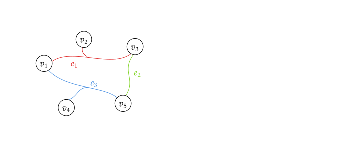
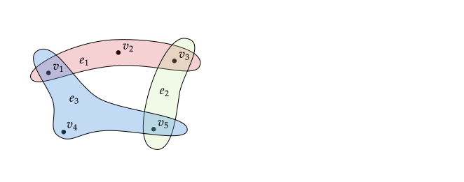

Hypergraphs
Undirected Hypergraph
An undirected hypergraph $H$ is an ordered pair $(V, E)$ comprising:
- $V$ - set of vertices
- $E$ - set of hyperedges.
Example 1
Let $H$ be a undirected hypergraph with $V = \{v_1, v_2, v_3, v_4, v_5\}$ and $E = \{ e_1, e_2, e_3\} = \{ \{v_1, v_2, v_3\} , \{ v_3, v_5 \}, \{ v_1, v_4, v_5 \} \}$. We can draw hypergraph using $2$ illustration methods.
1

2

Undirected Hypergraph with Weights
An undirected hypergraph with weights $G$ is defined similarly to an undirected hypergraph, but we also assign weights to every hyperedge $e$. Instead of ordered pair $(V, E)$, we define triple $(V,E, \mathbf{W})$, where $\mathbf{W} \in \mathbb{R}^{|E| \times |E|}$ denote the diagonal matrix of hyperedge weights with $\text{diag}(\mathbf{W}) = [w(e_1), w(e_2), \dots, w(e_{|E|})]$.
The structure of hypergraph is usually represented by an incidence matrix $\mathbf{H} \in \{ 0, 1\}^{|V| \times |E|}$, where $\mathbf{H} (v, e)$ is indicator function that shows if vertex $v \in e$
$$ \mathbf{H} (v, e) = \begin{cases} 1 \ \ \ \ \text{if} \ \ v \in e \\ 0 \ \ \ \ \text{if} \ \ v \not\in e \end{cases} $$Similarly to a graph, we can track the degree of hyperedge $e$ defined as
$$ \delta (e) = \sum_{v \in V} \mathbf{H}(v, e) $$and degree of vertex $v$
$$ d(v) = \sum_{e \in E} w(e) \cdot \mathbf{H}(v, e) $$Based on previous definitions we can also define the diagonal matrix of
- vertex degrees $\mathbf{D}_v$ with $\text{diag}(\mathbf{D}_v) = [d(v_1), d(v_2), \dots, d(v_{|V|})]$
- hyperedge degrees $\mathbf{D}_{e}$ with $\text{diag}(\mathbf{D}_e) = [\delta(e_1), \delta(e_2), \dots, \delta(e_{|E|})]$
Example 2
Let us use hypergraph from previous but this time we add weights. Our hypergraph $G$ is triple $(V ,E, \mathbf{W})$ where $V = \{v_1, v_2, v_3, v_4, v_5\}$, $E = \{ e_1, e_2, e_3\} = \{ \{v_1, v_2, v_3\} , \{ v_3, v_5 \}, \{ v_1, v_4, v_5 \} \}$ and $\text{diag}(\mathbf{W}) = [1,1,1]$.
$$ \mathbf{H} = \begin{bmatrix} 1 & 0 & 1 \\ 1 & 0 & 0 \\ 1 & 1 & 0 \\ 0 & 0 & 1 \\ 0 & 1 & 1 \\ \end{bmatrix} $$$$ \mathbf{W} = \begin{bmatrix} 1 & 0 & 0 \\ 0 & 1 & 0 \\ 0 & 0 & 1 \\ \end{bmatrix} $$
$$ \mathbf{D}_v = \begin{bmatrix} 2 & 0 & 0 & 0 & 0 \\ 0 & 1 & 0 & 0 & 0 \\ 0 & 0 & 2 & 0 & 0 \\ 0 & 0 & 0 & 1 & 0 \\ 0 & 0 & 0 & 0 & 2 \\ \end{bmatrix} $$
$$ \mathbf{D}_e = \begin{bmatrix} 3 & 0 & 0 \\ 0 & 2 & 0 \\ 0 & 0 & 3 \\ \end{bmatrix} $$